3 Data Visualization
In this section, you will learn:
- The structure of
ggplot. - A few techniques to make your plots better.
- A taste of animation.
In this section, we will use the following libraries and data:
## Parsed with column specification:
## cols(
## player_id = col_character(),
## h = col_double(),
## doubles = col_double(),
## triples = col_double(),
## hr = col_double(),
## ab = col_double(),
## g = col_double(),
## slg = col_double(),
## player = col_character()
## )To drive towards an end goal as we learn about ggplot, lets create a visualization to depict the annual hit totals for players with the top 20 total career hits.
3.1 Bar Chart
## # A tibble: 1,564 x 9
## player_id h doubles triples hr ab g slg player
## <chr> <dbl> <dbl> <dbl> <dbl> <dbl> <dbl> <dbl> <chr>
## 1 ruthba01 2873 506 136 714 8398 2503 0.69 Babe Ruth
## 2 willite01 2654 525 71 521 7706 2292 0.634 Ted Williams
## 3 gehrilo01 2721 534 163 493 8001 2164 0.632 Lou Gehrig
## 4 foxxji01 2646 458 125 534 8134 2317 0.609 Jimmie Foxx
## 5 bondsba01 2935 601 77 762 9847 2986 0.607 Barry Bonds
## 6 greenha01 1628 379 71 331 5193 1394 0.605 Hank Greenberg
## 7 mcgwima01 1626 252 6 583 6187 1874 0.588 Mark McGwire
## 8 ramirma02 2574 547 20 555 8244 2302 0.585 Manny Ramirez
## 9 dimagjo01 2214 389 131 361 6821 1736 0.579 Joe DiMaggio
## 10 hornsro01 2930 541 169 301 8173 2259 0.577 Rogers Hornsby
## # ... with 1,554 more rowsCanvas
The base layer of any ggplot object is simply the “canvas” in which you will build your plot.

Mapping
We will “map” each element of the data to the canvas.
Elements which can be mapped include x, y, color, fill, size, alpha, and a few others.
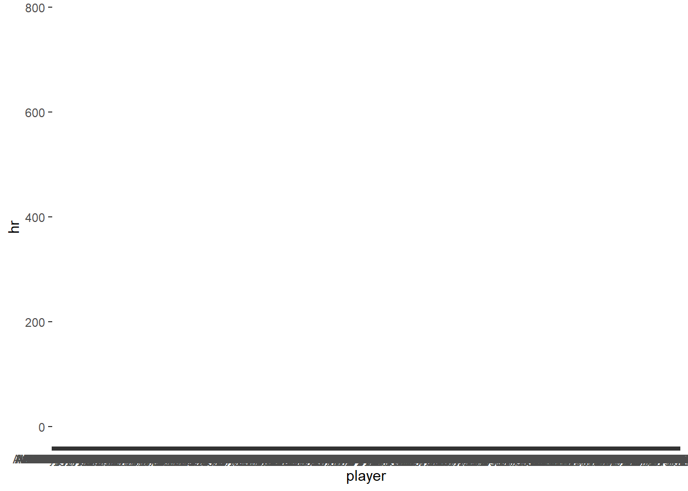
Filter Data
To keep the plot clean, we’ll filter for the top 20 players by career hits.
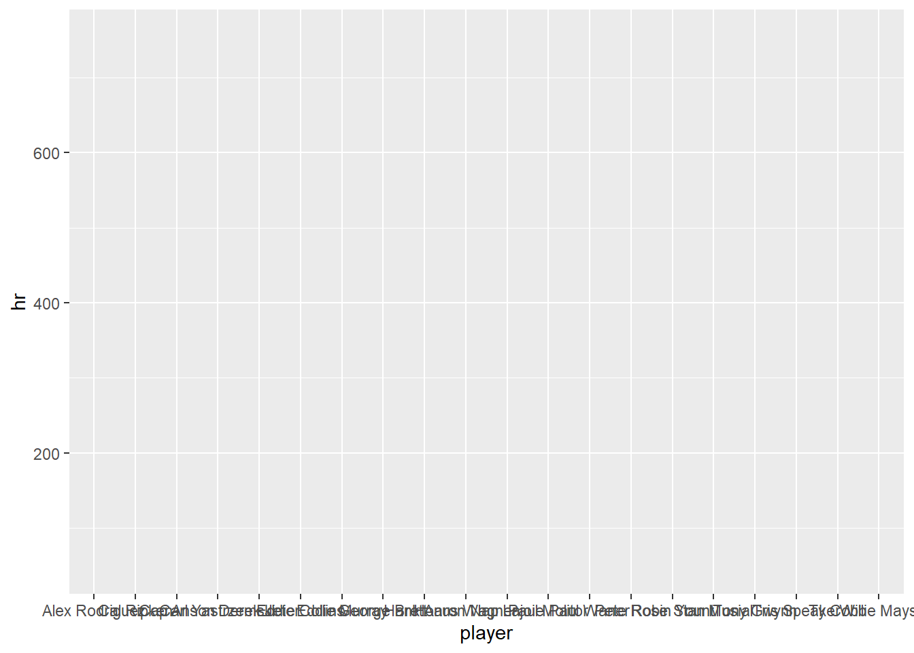
Plot ‘mechanism’
Next we add the type of plot. There are a ton and can be explored here.
We will only explore a couple.
Also, we should point out the simplicity of ggplot. Each ‘layer’ is added sequentially.
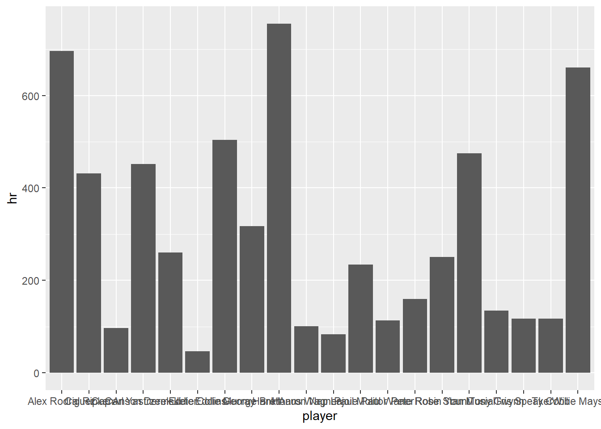
Coordinate Flip
Bar plots often suffer from difficult to read x axes. We can fix that with a coordinate flip.
slgname %>%
slice_max(order_by = h, n = 20) %>%
ggplot(aes(x=player, y = hr)) +
geom_col() +
coord_flip()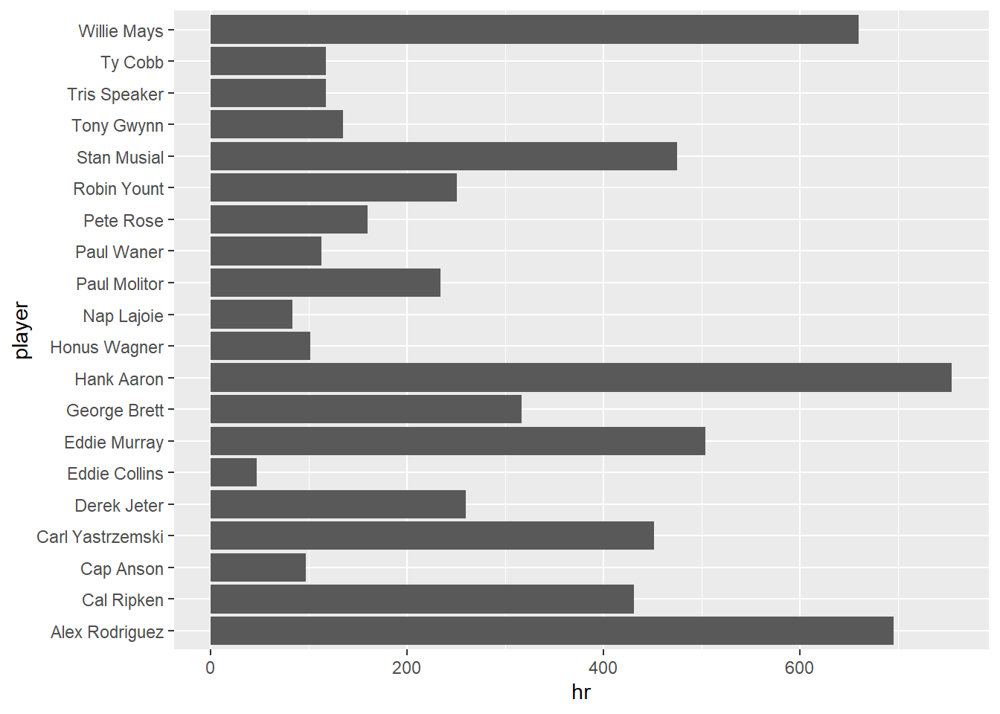
Reorder Factors
This is nice, but it doesn’t easily present the information we are trying to convey. Lets reorder the factors of the barplot.
slgname %>%
slice_max(order_by = h, n = 20) %>%
ggplot(aes(x=fct_reorder(player,hr), y = hr)) +
geom_col() +
coord_flip()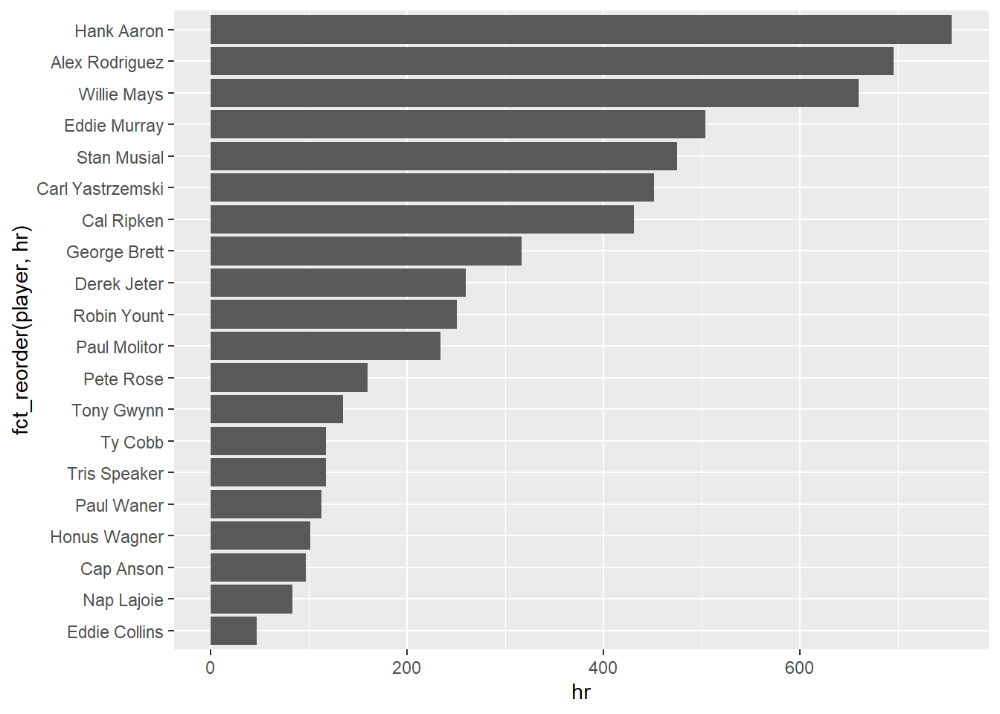
Color Bars
Lets add some more information to the plot by coloring the bars by the players slugging percentage.
slgname %>%
slice_max(order_by = h, n = 20) %>%
ggplot(aes(x=fct_reorder(player,hr), y = hr, fill = slg)) +
geom_col() +
coord_flip()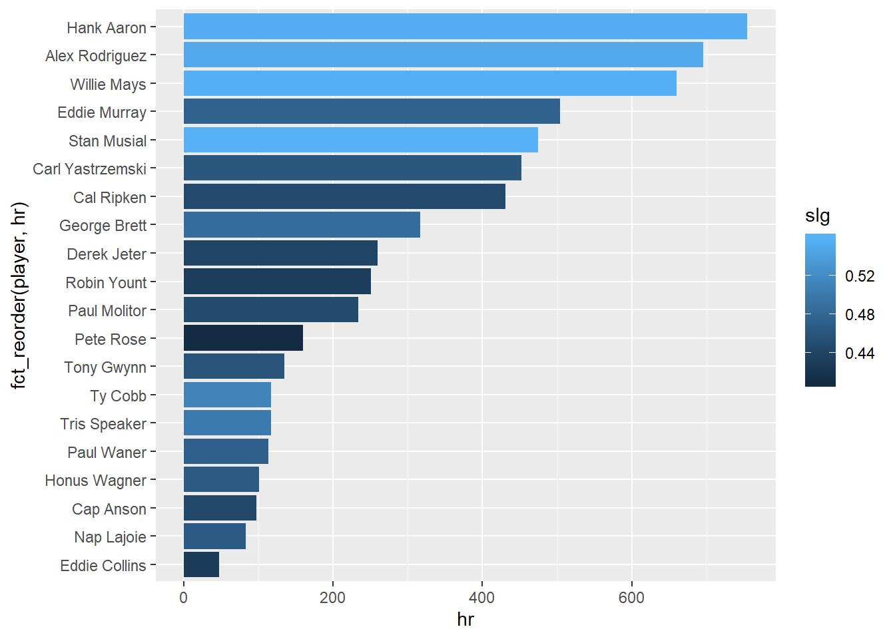
Update Labels
Lets update our plot labels to help the plot tell the story of the data.
Notice in the labs() function, you simply provide the information you would like to present to the mapped value.
slgname %>%
slice_max(order_by = h, n = 20) %>%
ggplot(aes(x=fct_reorder(player,hr), y = hr, fill = slg)) +
geom_col() +
coord_flip() +
labs(x = "Player", y = "Home Runs",
title = "Top 20 Home Run Hitters",
fill = "Slugging Percentage",
subtitle = "1871-2016",
caption = "*Among Players Who've Played at least 1000 games")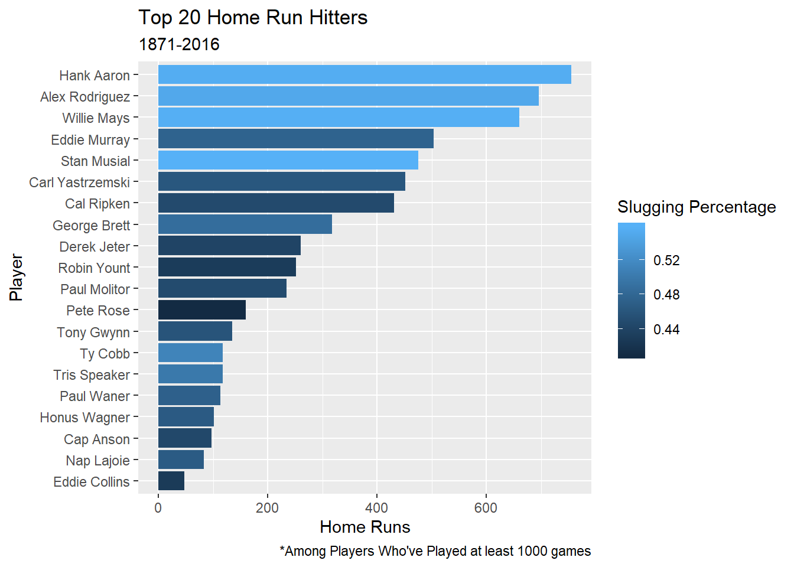
3.2 Scatter Plot
Next, lets show the functionality of the scatter plot.
Lets explore the trajectory of the home runs per season since 1990
Lets start with our original data:
data <- read_csv("data_sources/Batting.csv", col_types = cols(SF = col_double(), GIDP = col_double())) %>%
clean_names()
data## # A tibble: 102,816 x 22
## player_id year_id stint team_id lg_id g ab r h x2b x3b hr rbi sb cs bb so ibb hbp sh sf gidp
## <chr> <dbl> <dbl> <chr> <chr> <dbl> <dbl> <dbl> <dbl> <dbl> <dbl> <dbl> <dbl> <dbl> <dbl> <dbl> <dbl> <dbl> <dbl> <dbl> <dbl> <dbl>
## 1 abercda01 1871 1 TRO <NA> 1 4 0 0 0 0 0 0 0 0 0 0 NA NA NA NA NA
## 2 addybo01 1871 1 RC1 <NA> 25 118 30 32 6 0 0 13 8 1 4 0 NA NA NA NA NA
## 3 allisar01 1871 1 CL1 <NA> 29 137 28 40 4 5 0 19 3 1 2 5 NA NA NA NA NA
## 4 allisdo01 1871 1 WS3 <NA> 27 133 28 44 10 2 2 27 1 1 0 2 NA NA NA NA NA
## 5 ansonca01 1871 1 RC1 <NA> 25 120 29 39 11 3 0 16 6 2 2 1 NA NA NA NA NA
## 6 armstbo01 1871 1 FW1 <NA> 12 49 9 11 2 1 0 5 0 1 0 1 NA NA NA NA NA
## 7 barkeal01 1871 1 RC1 <NA> 1 4 0 1 0 0 0 2 0 0 1 0 NA NA NA NA NA
## 8 barnero01 1871 1 BS1 <NA> 31 157 66 63 10 9 0 34 11 6 13 1 NA NA NA NA NA
## 9 barrebi01 1871 1 FW1 <NA> 1 5 1 1 1 0 0 1 0 0 0 0 NA NA NA NA NA
## 10 barrofr01 1871 1 BS1 <NA> 18 86 13 13 2 1 0 11 1 0 0 0 NA NA NA NA NA
## # ... with 102,806 more rowsscatterdat <-
data %>%
filter(lg_id == "AL") %>%
filter(year_id >= 1990) %>%
mutate(team_id = fct_lump(team_id, n = 12)) %>%
filter(team_id != "Other") %>%
filter(complete.cases(.)) %>%
group_by(team_id,year_id) %>%
summarise(across(.cols = c(g:gidp),.fns = sum)) ## dplyr 1.0.0## `summarise()` regrouping output by 'team_id' (override with `.groups` argument)## # A tibble: 324 x 19
## # Groups: team_id [12]
## team_id year_id g ab r h x2b x3b hr rbi sb cs bb so ibb hbp sh sf gidp
## <fct> <dbl> <dbl> <dbl> <dbl> <dbl> <dbl> <dbl> <dbl> <dbl> <dbl> <dbl> <dbl> <dbl> <dbl> <dbl> <dbl> <dbl> <dbl>
## 1 BAL 1990 2253 5410 669 1328 234 22 132 623 94 52 660 962 50 40 72 41 131
## 2 BAL 1991 2365 5604 686 1421 256 29 170 660 50 33 528 974 33 33 47 45 147
## 3 BAL 1992 2183 5485 705 1423 243 36 148 680 89 48 647 827 55 51 50 59 139
## 4 BAL 1993 2127 5508 786 1470 287 24 157 744 73 54 655 930 52 41 49 56 131
## 5 BAL 1994 1473 3856 589 1047 185 20 139 557 69 13 438 655 23 39 16 35 89
## 6 BAL 1995 2046 4837 704 1267 229 27 173 668 92 45 574 803 36 39 40 41 119
## 7 BAL 1996 2245 5689 949 1557 299 29 257 914 76 40 645 915 49 61 31 67 134
## 8 BAL 1997 2282 5584 812 1498 264 22 196 780 63 26 586 952 43 65 46 59 121
## 9 BAL 1998 2359 5565 817 1520 303 11 214 783 86 48 593 903 30 58 44 44 136
## 10 BAL 1999 2300 5637 851 1572 299 21 203 804 107 46 615 890 34 61 41 55 146
## # ... with 314 more rows
Plot ‘mechanism’: geom_point()
geom_point() creates a scatterplot.
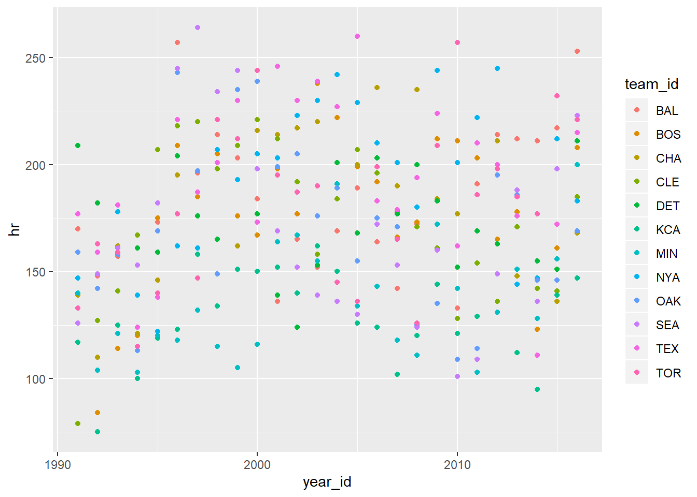
3.2.1 Arrange Teams by Least to Most Home Runs
Using fct_reorder, we can order the teams by most to least home runs.
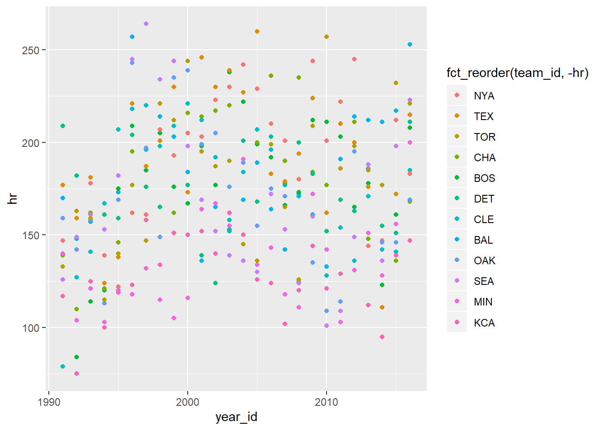
Plot ‘mechanism’: geom_smooth()
We can stack layers to help tell the story of our data.
scatterdat %>%
ggplot(aes(x=year_id,y=hr)) +
geom_point(aes(color = fct_reorder(team_id,-hr))) +
geom_smooth()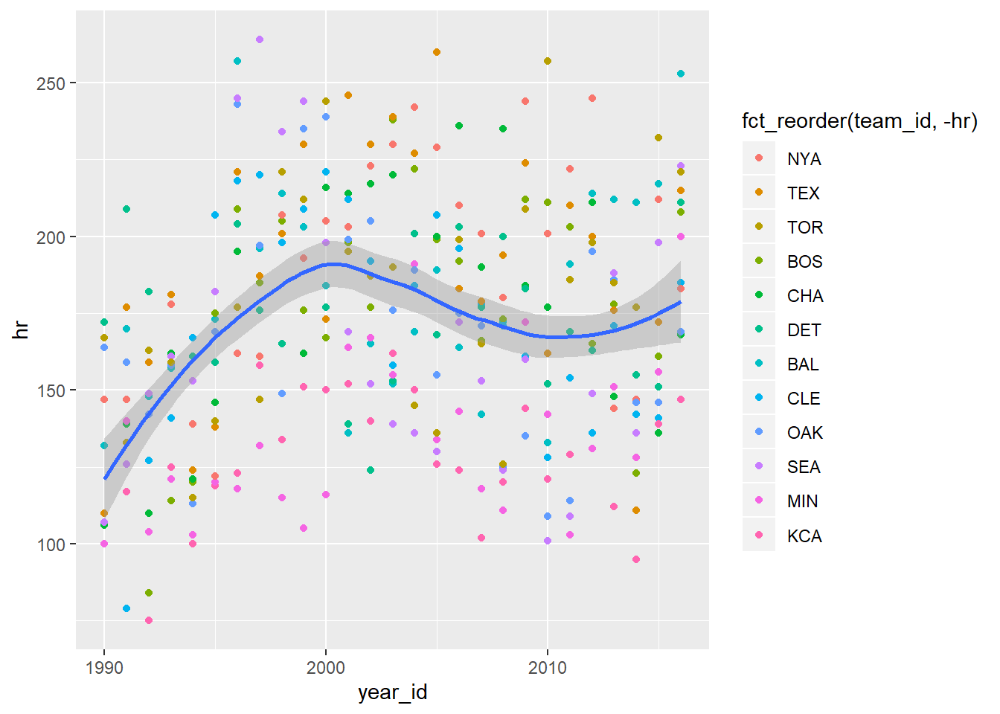
How does ggplot determine that line?
LOWESS - LOcally WEighted Scatterplot Smoothing
LOESS - LOcally Estimated Scatterplot Smoothing
Controlled by the term span. Smaller equals more “wigglyness”
span = 1
scatterdat %>%
ggplot(aes(x=year_id,y=hr)) +
geom_point(aes(color = fct_reorder(team_id,-hr))) +
geom_smooth(span = 1)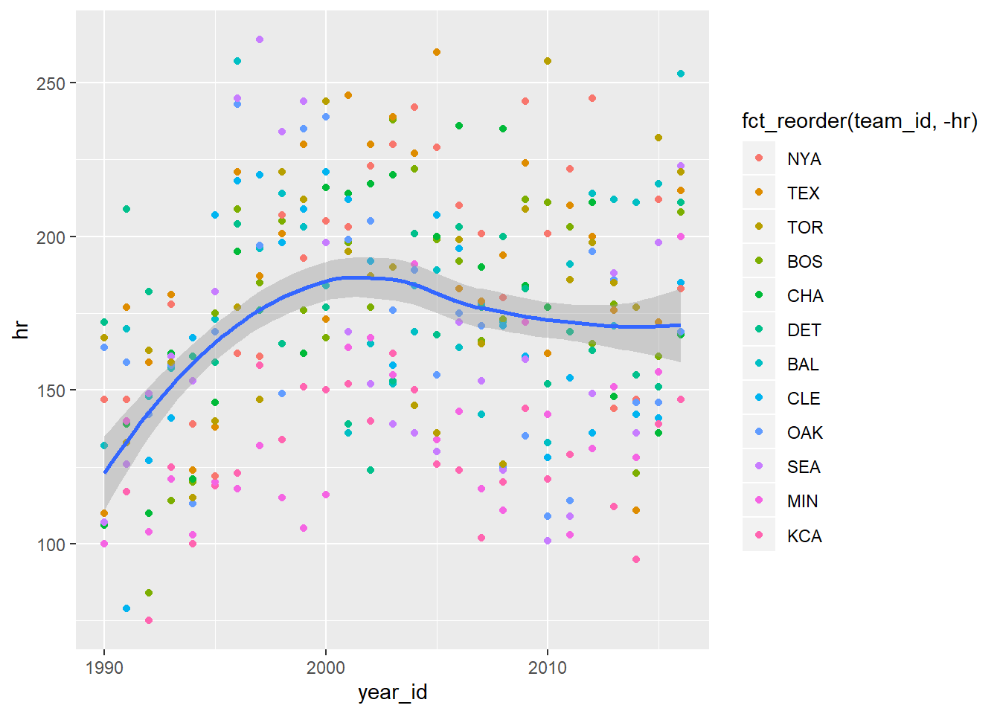
span = .1
scatterdat %>%
ggplot(aes(x=year_id,y=hr)) +
geom_point(aes(color = fct_reorder(team_id,-hr))) +
geom_smooth(span = .1)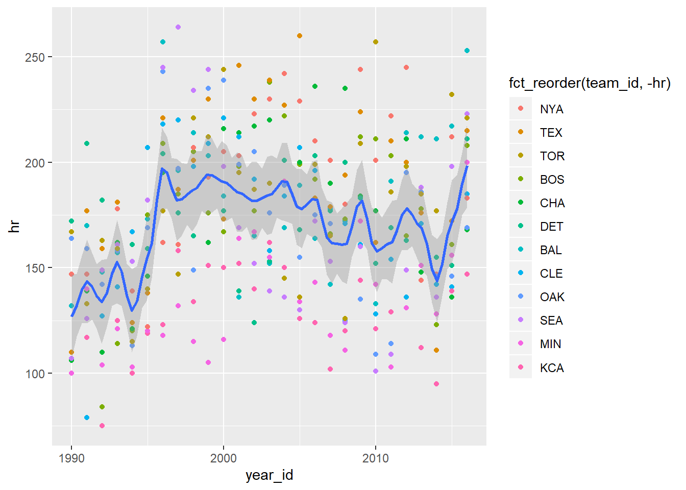
Both
scatterdat %>%
ggplot(aes(x=year_id,y=hr)) +
geom_point(aes(color = fct_reorder(team_id,-hr))) +
geom_smooth(span = .1) +
geom_smooth(span = 1, color = "red")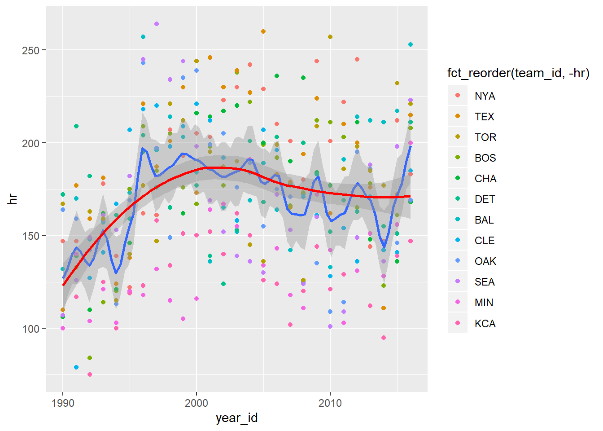
Facet Plots
ggplot offers the ability to ‘facet’ plots by a variable. This can help show contrast between different factors.
scatterdat %>%
ggplot(aes(x=year_id,y=hr)) +
geom_point(aes(color = fct_reorder(team_id,-hr))) +
geom_smooth() +
facet_wrap(~team_id)## `geom_smooth()` using method = 'loess' and formula 'y ~ x'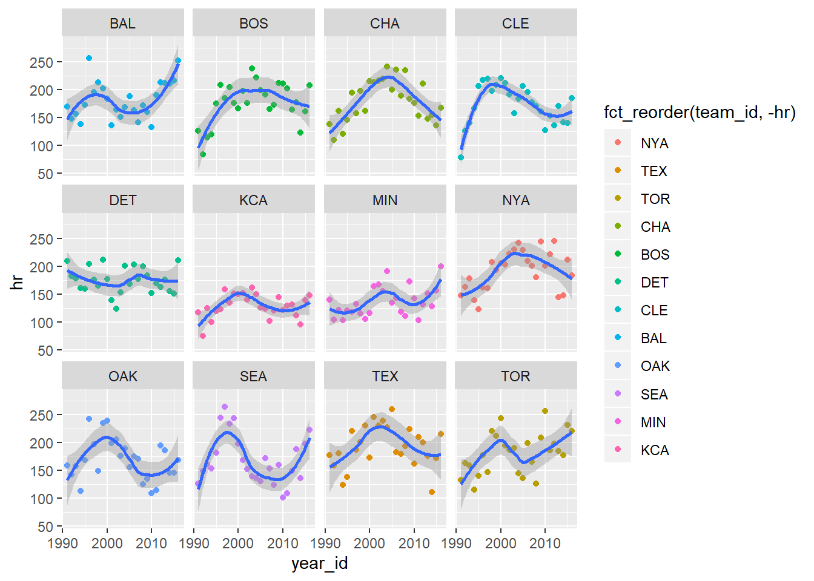
Update Labels
As before, we can update the labels.
scatterdat %>%
ggplot(aes(x=year_id,y=hr)) +
geom_point(aes(color = fct_reorder(team_id,-hr))) +
geom_smooth() +
facet_wrap(~team_id) +
labs(title = "Home Run Changes Over Time",
subtitle = str_c("From ", min(scatterdat$year_id), " to ", max(scatterdat$year_id)),
color = "Team",
x = "Season", y = "Season Home Run Total")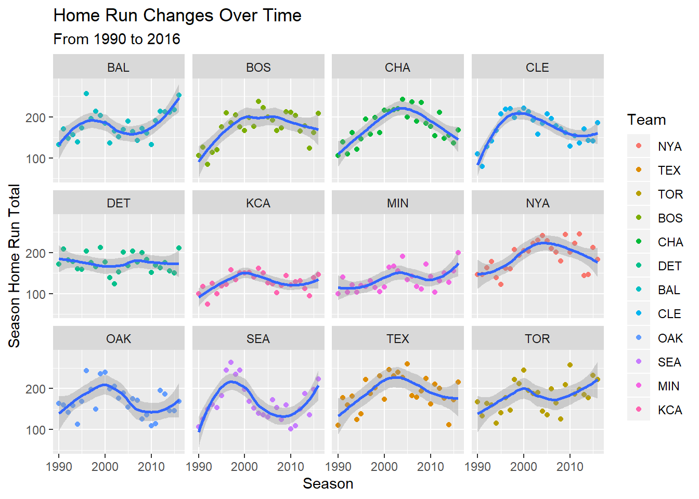
Change Smoothing Line
Earlier, we talked about the LOESS smoother. We can change the line type we impose on our scatter plots. In this instance, we can apply a best fit linear regression line.
scatterdat %>%
ggplot(aes(x=year_id,y=hr)) +
geom_point(aes(color = fct_reorder(team_id,-hr))) +
geom_smooth(method = "lm") +
facet_wrap(~team_id) +
labs(title = "Home Run Changes Over Time",
subtitle = paste("From", min(scatterdat$year_id), "to", max(scatterdat$year_id)),
color = "Team",
x = "Season", y = "Season Home Run Total")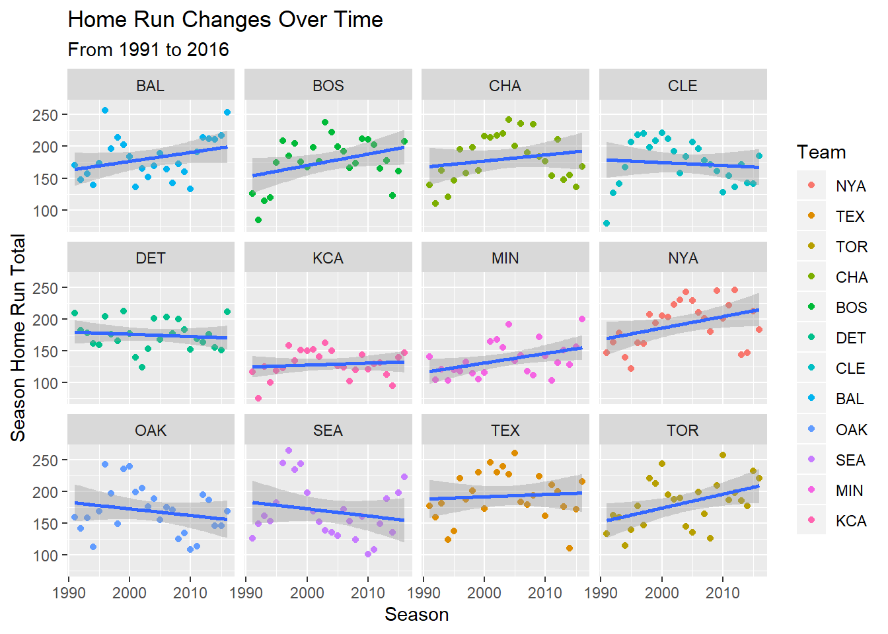
3.3 Animation
While not rendered here, we will briefly display the ability to animate a ggplot. We’ve created some new data to support animation showing the change in the number of home runs and strike outs over the years.
animdata <-
data %>%
filter(!is.na(lg_id)) %>%
group_by(year_id, team_id) %>%
summarise(across(.cols = c(hr, so, bb, ab), .fns = ~ sum(., na.rm = TRUE))) %>%
ungroup() %>%
inner_join(data %>%
select(year_id, team_id, lg_id) %>%
distinct()
)
animdata## # A tibble: 2,785 x 7
## year_id team_id hr so bb ab lg_id
## <dbl> <chr> <dbl> <dbl> <dbl> <dbl> <chr>
## 1 1876 BSN 9 98 58 2722 NL
## 2 1876 CHN 8 45 70 2748 NL
## 3 1876 CN1 4 136 41 2372 NL
## 4 1876 HAR 2 78 39 2664 NL
## 5 1876 LS1 6 98 24 2570 NL
## 6 1876 NY3 2 35 18 2180 NL
## 7 1876 PHN 7 36 27 2387 NL
## 8 1876 SL3 2 63 59 2478 NL
## 9 1877 BSN 4 121 65 2368 NL
## 10 1877 CHN 0 111 57 2273 NL
## # ... with 2,775 more rowsWe’ll talk through the code below. While it does not render in the book, we’ll run it in console and talk through the process.
There are many gganimate options and you can explore further here
p <- animdata %>%
ggplot(aes(x = so,y = hr, color = bb,size = ab,group = year_id)) +
geom_point() +
facet_wrap(~ lg_id) +
transition_states(year_id,transition_length = 1,state_length = 30) +
labs(title = "The Change in Home Runs and Strike Outs Over The Years", subtitle = 'Year: {closest_state}', x = "Strike Outs", y = "Home Runs") +
# labs(title = 'Year: {closest_state, cache = TRUE}') +
enter_fade() +
exit_fade()
animate(p,nframes = length(unique(data$year_id)) * 2)